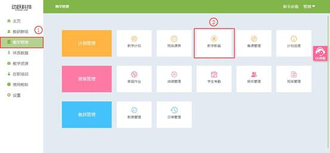

教学教案使用说明
视频教程：
教学教案的使用，教师在完成教学计划的设置后，系统会自动生成匹配的教案内容，可以浏览，导出。系统支持校本教案的管理，教师可以自行上传创作的校本教案，校本教案可以与系统教案一起使用。
1. 登录动跃体育教学管理平台后，进入平台操作界面。
2. 点击进入教学管理 > 点击教学教案，如下图:

3. 进入教学教案页面，在正在使用的教案列表页，点击教学教案蓝色文本，即可查看使用中的教案。

4.点击进入，课查看所有正在使用的教案列表，点击课次名称蓝色文本，可查看具体教案，每份教案右边有导出按钮，点击可保存教案到本地。
5.点击进去可预览教案，右上角有导出教案按钮，可导出教案到本地，编辑按钮，可修改保存为自己的教案，满足教师自己的特殊内容的教学教案。
6. 点击自定义教案库，每位教师都可制作原创的教案，作为校本教案进行使用。
>进入自定义教案库后，点击自建教案，弹出窗口，按要求选择填写后，点击确定保存，即可进入编辑页面。
>根据教师自己的内容进行编辑，自定义教案，可输入自己的名字，作为自己的私人教案，按照页面提示，输入内容，点击右侧的保存按钮，即可成功保存每一单元框的内容。
>所有内容填写好之后，点击确定，即可保存自定义教案。
>自定义教案库中显示列表，点击蓝色文本课预览自定义教案，右边按钮可导出与删除教案